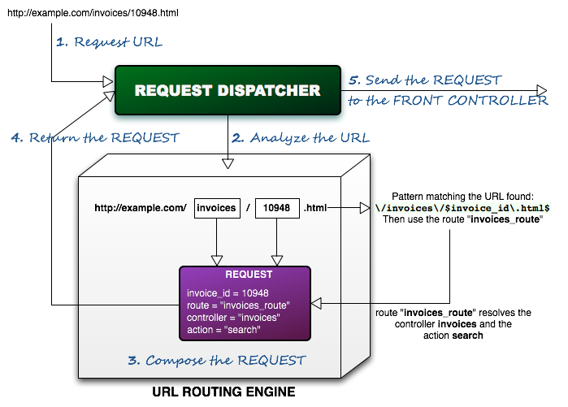

<table cellpadding="10" cellspacing="0" width="100%" border="0"><tr><td valign="top">
<div><a name=""></a><h1>URLs and Routes</h1>
  <div class="ref-purpose">Defining URL routes</div>
 <div class="ref-synopsis"></div>
<h2>Table of Contents</h2>
<ul>

<a href="../Request/tutorial_Request.UrlRouting.pkg.html#intro">Introduction</a><br />

<a href="../Request/tutorial_Request.UrlRouting.pkg.html#routes">Routes</a><br />

<a href="../Request/tutorial_Request.UrlRouting.pkg.html#route_definition">Defining a Route</a><br />

&nbsp;&nbsp;&nbsp;<a href="../Request/tutorial_Request.UrlRouting.pkg.html#route_definition.adding_conditions">Conditional parameters</a><br />

<a href="../Request/tutorial_Request.UrlRouting.pkg.html#default_routes">Default routes</a><br />

<a href="../Request/tutorial_Request.UrlRouting.pkg.html#uri">The __Uri class</a><br />
</ul>

 <p></p>
  <span><a name="intro"></a><h2>Introduction</h2><p>This is the Lion native <strong>URL rewrite engine</strong>, delegating the URL parsing from the webserver to Lion itself.</p>
   <p>URL rewriting is a method of creating search engine friendly URLs, also known as SEO (Search Engine Optimization) URLs. Dynamic URLs have apparently a negative effect on search engine ranking. To get around this issue the URL rewriting technique is used. URL rewrite tools can examine a website and produce a simplified link for each resource on the website.</p>
   <p>i.e. the link:</p>
     <font face="Courier New">http://yourdomain.com/index.php?module=invoices&amp;view_id=10948</font>
   <p>can be changed to</p>
     <font face="Courier New">http://yourdomain.com/invoices/10948.html</font>
   <p>As part of a web application usability regarding the URLs, general recommendation is that URLs be chosen so that they:</p>
     <ul><li>Are short.</li>
       <li>Are easy to type.</li>
       <li>Visualize the site structure.</li>
       <li>Are <i>guessable</i>, allowing the user to navigate through the site by using intuition to fid resourcesoff parts of the URL.</li></ul></span>
  <span><a name="routes"></a><h2>Routes</h2><p>Different URL formats accepted by Lion are specified within route definitions. A route is a way to describe the mapping between an URL and how to <i>route</i> the execution flow.<br />
   A route defines a pattern for the URL, in pure perl compatible regular expression syntax. First found route matching an URL will be the one used to process the request.</p>
   <p>A route defines the following components:</p>
   <ul><li>Which front controller will attend the request.</li>
     <li>Which action/controller will be executed.</li>
     <li>Which other parameters will be appended to the request.</li></ul></span>
  <span><a name="route_definition"></a><h2>Defining a Route</h2><p>The way to define routes is by adding them to the configuration (by default, the <strong>app/config/routes.xml</strong> file)</p>
   <p>i.e.
     <div class="listing"><pre><ol><li><div class="src-line"><span class="src-php">&lt;?</span><span class="src-id">xml&nbsp;version&nbsp;</span>=&nbsp;<span class="src-str">&quot;1.0&quot;&nbsp;</span><span class="src-id">standalone</span>=<span class="src-str">&quot;yes&quot;</span><span class="src-php">?&gt;</span></div></li>
<li><div class="src-line">&lt;configuration&gt;</div></li>
<li><div class="src-line">&nbsp;</div></li>
<li><div class="src-line">&nbsp;&nbsp;&lt;routes&gt;</div></li>
<li><div class="src-line">&nbsp;</div></li>
<li><div class="src-line">&nbsp;&nbsp;&nbsp;&nbsp;&lt;route&nbsp;id=&quot;invoices_route&quot;&nbsp;uri-pattern=&quot;\/invoices\/$invoice_id\.html$&quot;&gt;</div></li>
<li><div class="src-line">&nbsp;&nbsp;&nbsp;&nbsp;&nbsp;&nbsp;&lt;front-controller&nbsp;class=&quot;__HttpFrontController&quot;/&gt;</div></li>
<li><div class="src-line">&nbsp;&nbsp;&nbsp;&nbsp;&nbsp;&nbsp;&lt;action&nbsp;controller=&quot;invoices&quot;&nbsp;code=&quot;search&quot;/&gt;</div></li>
<li><div class="src-line">&nbsp;&nbsp;&nbsp;&nbsp;&nbsp;&nbsp;&lt;parameter&nbsp;name=&quot;invoice_id&quot;&nbsp;value=&quot;$invoice_id&quot;/&gt;</div></li>
<li><div class="src-line">&nbsp;&nbsp;&nbsp;&nbsp;&nbsp;&nbsp;&lt;variable&nbsp;name=&quot;$invoice_id&quot;&nbsp;var-pattern=&quot;^\d+$&quot;/&gt;</div></li>
<li><div class="src-line">&nbsp;&nbsp;&nbsp;&nbsp;&lt;/route&gt;</div></li>
<li><div class="src-line">&nbsp;</div></li>
<li><div class="src-line">&lt;/configuration&gt;</div></li>
</ol></pre></div></p>
   <p>In this example we are defining a route for URLs matching the regular expression <i>\/invoices\/$invoice_id\.html$</i>. It is, URLs like <i>/invoices/xxx.html</i>, being xxx a number.<br />
   An URL matching this pattern will be routed as following:
   <ul><li>The front controller class to attend the request will be the <a href="../FrontController/__HttpFrontController.html">__HttpFrontController</a> class.</li>
     <li>The controller and action to be executed will be the controller <i>invoices</i> and the action <i>search</i>.</li>
     <li>A parameter (<i>invoice_id</i>) will be added to the request.</li></ul></p>
   <p>i.e.<br />
   </p>
   <p>Note that the way to define variables within the URL regular expression is by ussing the prefix dollar ($) followed by an identifier. In our example, $invoice_id.<br />
   It's also important to note that we can also impose a regular expression to restrict the value for a variable. In our example, we are restricting the value for $invoice_id to the pattern <i>^\d+$</i>.</p>
   <p>According to that, the full regular expression that need to matches an URL in order to be routed by the invoice_search route is the following one: <i>\/invoices\/\d+\.html$</i><br />
   i.e. 
   <font face="Courier New">http://yourdomain.com/invoices/10948.html</font></p>
   <p>Now, let's see a more generic example:
     <div class="listing"><pre><ol><li><div class="src-line"><span class="src-php">&lt;?</span><span class="src-id">xml&nbsp;version&nbsp;</span>=&nbsp;<span class="src-str">&quot;1.0&quot;&nbsp;</span><span class="src-id">standalone</span>=<span class="src-str">&quot;yes&quot;</span><span class="src-php">?&gt;</span></div></li>
<li><div class="src-line">&lt;configuration&gt;</div></li>
<li><div class="src-line">&nbsp;</div></li>
<li><div class="src-line">&nbsp;&nbsp;&lt;routes&gt;</div></li>
<li><div class="src-line">&nbsp;</div></li>
<li><div class="src-line">&nbsp;&nbsp;&nbsp;&nbsp;&lt;route&nbsp;id=&quot;search&quot;&nbsp;uri-pattern=&quot;\/$module\/$search_id\.html$&quot;&gt;</div></li>
<li><div class="src-line">&nbsp;&nbsp;&nbsp;&nbsp;&nbsp;&nbsp;&lt;front-controller&nbsp;class=&quot;__HttpFrontController&quot;/&gt;</div></li>
<li><div class="src-line">&nbsp;&nbsp;&nbsp;&nbsp;&nbsp;&nbsp;&lt;action&nbsp;controller=&quot;$module&quot;&nbsp;code=&quot;search&quot;/&gt;</div></li>
<li><div class="src-line">&nbsp;&nbsp;&nbsp;&nbsp;&nbsp;&nbsp;&lt;parameter&nbsp;name=&quot;search_id&quot;&nbsp;value=&quot;$search_id&quot;/&gt;</div></li>
<li><div class="src-line">&nbsp;&nbsp;&nbsp;&nbsp;&nbsp;&nbsp;&lt;variable&nbsp;name=&quot;$module&quot;&nbsp;var-pattern=&quot;^(invoices|clients|accounts)$&quot;/&gt;</div></li>
<li><div class="src-line">&nbsp;&nbsp;&nbsp;&nbsp;&nbsp;&nbsp;&lt;variable&nbsp;name=&quot;$search_id&quot;&nbsp;var-pattern=&quot;^\d+$&quot;/&gt;</div></li>
<li><div class="src-line">&nbsp;&nbsp;&nbsp;&nbsp;&lt;/route&gt;</div></li>
<li><div class="src-line">&nbsp;</div></li>
<li><div class="src-line">&lt;/configuration&gt;</div></li>
</ol></pre></div></p>
   <p>In this example, we are reusing the same route definition for the controllers invoices, clients and accounts.</p>
  <a name="route_definition.adding_conditions"></a><h3>Conditional parameters</h3><p>Lion allows the use of conditional parameters, meaning parameters that will be added just if a condition is satisfaced.<br />
   Conditions can be defined in 2 different ways:</p>
   <ul><li>By checking if a variable has a concrete value, by ussing the <i>if-equals</i> tag.</li>
     <li>By checking if a variable has been set, by ussing the <i>if-isset</i> tag.</li></ul>
   <p>i.e., checking the variable value:
     <div class="listing"><pre><ol><li><div class="src-line"><span class="src-php">&lt;?</span><span class="src-id">xml&nbsp;version&nbsp;</span>=&nbsp;<span class="src-str">&quot;1.0&quot;&nbsp;</span><span class="src-id">standalone</span>=<span class="src-str">&quot;yes&quot;</span><span class="src-php">?&gt;</span></div></li>
<li><div class="src-line">&lt;configuration&gt;</div></li>
<li><div class="src-line">&nbsp;</div></li>
<li><div class="src-line">&nbsp;&nbsp;&lt;routes&gt;</div></li>
<li><div class="src-line">&nbsp;</div></li>
<li><div class="src-line">&nbsp;&nbsp;&nbsp;&nbsp;&lt;route&nbsp;id=&quot;search&quot;&nbsp;uri-pattern=&quot;\/$module\/$search_id\.$extension$&quot;&gt;</div></li>
<li><div class="src-line">&nbsp;&nbsp;&nbsp;&nbsp;&nbsp;&nbsp;&lt;front-controller&nbsp;class=&quot;__HttpFrontController&quot;/&gt;</div></li>
<li><div class="src-line">&nbsp;&nbsp;&nbsp;&nbsp;&nbsp;&nbsp;&lt;action&nbsp;controller=&quot;$module&quot;&nbsp;code=&quot;search&quot;/&gt;</div></li>
<li><div class="src-line">&nbsp;</div></li>
<li><div class="src-line">&nbsp;&nbsp;&nbsp;&nbsp;&nbsp;&nbsp;&lt;if-equals&nbsp;variable=&quot;$extension&quot;&nbsp;value=&quot;html&quot;&gt;</div></li>
<li><div class="src-line">&nbsp;&nbsp;&nbsp;&nbsp;&nbsp;&nbsp;&nbsp;&nbsp;&lt;parameter&nbsp;name=&quot;use_cache&quot;&nbsp;value=&quot;1&quot;/&gt;</div></li>
<li><div class="src-line">&nbsp;&nbsp;&nbsp;&nbsp;&nbsp;&nbsp;&lt;/if-equals&gt;</div></li>
<li><div class="src-line">&nbsp;</div></li>
<li><div class="src-line">&nbsp;&nbsp;&nbsp;&nbsp;&nbsp;&nbsp;&lt;parameter&nbsp;name=&quot;search_id&quot;&nbsp;value=&quot;$search_id&quot;/&gt;</div></li>
<li><div class="src-line">&nbsp;&nbsp;&nbsp;&nbsp;&nbsp;&nbsp;&lt;variable&nbsp;name=&quot;$module&quot;&nbsp;var-pattern=&quot;^(invoices|clients|accounts)$&quot;/&gt;</div></li>
<li><div class="src-line">&nbsp;&nbsp;&nbsp;&nbsp;&nbsp;&nbsp;&lt;variable&nbsp;name=&quot;$search_id&quot;&nbsp;var-pattern=&quot;^\d+$&quot;/&gt;</div></li>
<li><div class="src-line">&nbsp;&nbsp;&nbsp;&nbsp;&nbsp;&nbsp;&lt;variable&nbsp;name=&quot;$extension&quot;&nbsp;var-pattern=&quot;^(html|action)$&quot;/&gt;</div></li>
<li><div class="src-line">&nbsp;&nbsp;&nbsp;&nbsp;&lt;/route&gt;</div></li>
<li><div class="src-line">&nbsp;</div></li>
<li><div class="src-line">&lt;/configuration&gt;</div></li>
</ol></pre></div></p>
   <p>In this example, we are adding a variable (use_cache) just in case the extension is 'html'.</p>
   <p>i.e., checking if a variable has been set:
     <div class="listing"><pre><ol><li><div class="src-line"><span class="src-php">&lt;?</span><span class="src-id">xml&nbsp;version&nbsp;</span>=&nbsp;<span class="src-str">&quot;1.0&quot;&nbsp;</span><span class="src-id">standalone</span>=<span class="src-str">&quot;yes&quot;</span><span class="src-php">?&gt;</span></div></li>
<li><div class="src-line">&lt;configuration&gt;</div></li>
<li><div class="src-line">&nbsp;</div></li>
<li><div class="src-line">&nbsp;&nbsp;&lt;routes&gt;</div></li>
<li><div class="src-line">&nbsp;</div></li>
<li><div class="src-line">&nbsp;&nbsp;&nbsp;&nbsp;&lt;route&nbsp;id=&quot;search&quot;&nbsp;uri-pattern=&quot;\/$module\/$search_id(\_$page_id)?\.html$&quot;&gt;</div></li>
<li><div class="src-line">&nbsp;&nbsp;&nbsp;&nbsp;&nbsp;&nbsp;&lt;front-controller&nbsp;class=&quot;__HttpFrontController&quot;/&gt;</div></li>
<li><div class="src-line">&nbsp;&nbsp;&nbsp;&nbsp;&nbsp;&nbsp;&lt;action&nbsp;controller=&quot;$module&quot;&nbsp;code=&quot;search&quot;/&gt;</div></li>
<li><div class="src-line">&nbsp;&nbsp;&nbsp;&nbsp;&nbsp;&nbsp;&lt;parameter&nbsp;name=&quot;search_id&quot;&nbsp;value=&quot;$search_id&quot;/&gt;</div></li>
<li><div class="src-line">&nbsp;</div></li>
<li><div class="src-line">&nbsp;&nbsp;&nbsp;&nbsp;&nbsp;&nbsp;&lt;if-isset&nbsp;variable=&quot;$page_id&quot;&gt;</div></li>
<li><div class="src-line">&nbsp;&nbsp;&nbsp;&nbsp;&nbsp;&nbsp;&nbsp;&nbsp;&lt;parameter&nbsp;name=&quot;pagination&quot;&nbsp;value=&quot;1&quot;/&gt;</div></li>
<li><div class="src-line">&nbsp;&nbsp;&nbsp;&nbsp;&nbsp;&nbsp;&nbsp;&nbsp;&lt;parameter&nbsp;name=&quot;page_id&quot;&nbsp;value=&quot;$page_id&quot;/&gt;</div></li>
<li><div class="src-line">&nbsp;&nbsp;&nbsp;&nbsp;&nbsp;&nbsp;&lt;/if-isset&gt;</div></li>
<li><div class="src-line">&nbsp;</div></li>
<li><div class="src-line">&nbsp;&nbsp;&nbsp;&nbsp;&nbsp;&nbsp;&lt;variable&nbsp;name=&quot;$module&quot;&nbsp;var-pattern=&quot;^(invoices|clients|accounts)$&quot;/&gt;</div></li>
<li><div class="src-line">&nbsp;&nbsp;&nbsp;&nbsp;&nbsp;&nbsp;&lt;variable&nbsp;name=&quot;$page_id&quot;&nbsp;var-pattern=&quot;^\d+$&quot;/&gt;</div></li>
<li><div class="src-line">&nbsp;&nbsp;&nbsp;&nbsp;&nbsp;&nbsp;&lt;variable&nbsp;name=&quot;$search_id&quot;&nbsp;var-pattern=&quot;^\d+$&quot;/&gt;</div></li>
<li><div class="src-line">&nbsp;&nbsp;&nbsp;&nbsp;&lt;/route&gt;</div></li>
<li><div class="src-line">&nbsp;</div></li>
<li><div class="src-line">&lt;/configuration&gt;</div></li>
</ol></pre></div></p>
   <p>In this example, we are adding 2 variables (pagination and page_id) just if the page_id is set.</p><br /></span>
  <span><a name="default_routes"></a><h2>Default routes</h2><p>Lion defines a set of routes that will be availabled by default, and defined in the /lion/libs/configuration/default/config.xml file, located in the lion directory:</p>
   <ul><li>Route <strong>default</strong>: Defined as <i>&lt;controller&gt;[.&lt;action&gt;].(action|lion)</i>. This route uses the <a href="../FrontController/__HttpFrontController.html">__HttpFrontController</a> and has been defined in order to route the most common client requests. The only thing to highlight here is the fact that by ussing the suffix .lion we'll switch to lion administrative area context. Otherwise, the application context will be used.</li>
     <li>Route <strong>ajax</strong>: Defined as <i>index.ajax</i>. This route uses the <a href="../FrontController/__AjaxFrontController.html">__AjaxFrontController</a> and has been defined in order to route the ajax requests.</li>
     <li>Route <strong>resource</strong>: Defined as <i>/resources/&lt;resource_file&gt;</i>. This route uses the <a href="../FrontController/__ResourceFrontController.html">__ResourceFrontController</a> and has been defined in order to route request for images, css and .js files protected by lion (i.e. a js for a concrete UI component).</li>
     <li>Route <strong>unknow_url_format</strong>: This is the last route to be evaluated by lion. It accepts any URL format, and redirects to the error page with the error code 55701 (Unknwo URL format). If an URL does not match any other route, will be handled by this one.</li></ul></span>
  <span><a name="uri"></a><h2>The __Uri class</h2><p>By delegating the URL rewrite to Lion, the URL format depends on the route definitions. Because URL formats are sensible to be changed, is a bad practice to hardcode URLs within the code/templates since they could stop working after changing the URL format within the route specification.</p>
   <p>The <a href="../UrlRoutingEngine/__Uri.html">__Uri</a> class has been designed to cover this aspect. It provides methods to discompound an URL into components as well as to do the inverse task, to compose an URL as from the components.</p>
   <p>i.e. Discompound an URL into components:
     <div class="listing"><pre><ol><li><div class="src-line"><span class="src-php">&lt;?php</span></div></li>
<li><div class="src-line">&nbsp;</div></li>
<li><div class="src-line"><span class="src-comm">//Discompound&nbsp;an&nbsp;url&nbsp;into&nbsp;single&nbsp;elements:</span></div></li>
<li><div class="src-line"><span class="src-var">$uri&nbsp;</span>=&nbsp;<span class="src-id"><a href="../UrlRoutingEngine/__UriFactory.html">__UriFactory</a></span><span class="src-sym">::</span><a href="../UrlRoutingEngine/__UriFactory.html#methodgetInstance">getInstance</a><span class="src-sym">(</span><span class="src-sym">)</span><span class="src-sym">-&gt;</span></div></li>
<li><div class="src-line">&nbsp;&nbsp;&nbsp;&nbsp;&nbsp;&nbsp;&nbsp;&nbsp;&nbsp;&nbsp;&nbsp;&nbsp;&nbsp;&nbsp;&nbsp;&nbsp;&nbsp;&nbsp;&nbsp;&nbsp;&nbsp;<span class="src-id">createUri</span><span class="src-sym">(</span><span class="src-str">'http://yourdomain.com/invoices/10948.html'</span><span class="src-sym">)</span><span class="src-sym">;</span></div></li>
<li><div class="src-line">&nbsp;</div></li>
<li><div class="src-line"><span class="src-var">$parameters&nbsp;</span>=&nbsp;<span class="src-var">$uri</span><span class="src-sym">-&gt;</span><span class="src-id">getParameters</span><span class="src-sym">(</span><span class="src-sym">)</span><span class="src-sym">;&nbsp;</span></div></li>
<li><div class="src-line"><span class="src-comm">//--&gt;&nbsp;[invoice_id&nbsp;=&gt;&nbsp;10948]</span></div></li>
<li><div class="src-line">&nbsp;</div></li>
<li><div class="src-line"><span class="src-var">$controller_code&nbsp;</span>=&nbsp;<span class="src-var">$uri</span><span class="src-sym">-&gt;</span><span class="src-id">getControllerCode</span><span class="src-sym">(</span><span class="src-sym">)</span><span class="src-sym">;&nbsp;</span></div></li>
<li><div class="src-line"><span class="src-comm">//--&gt;&nbsp;invoices</span></div></li>
<li><div class="src-line">&nbsp;</div></li>
<li><div class="src-line"><span class="src-var">$action_code&nbsp;</span>=&nbsp;<span class="src-var">$uri</span><span class="src-sym">-&gt;</span><span class="src-id">getActionCode</span><span class="src-sym">(</span><span class="src-sym">)</span><span class="src-sym">;&nbsp;</span></div></li>
<li><div class="src-line"><span class="src-comm">//--&gt;&nbsp;default</span></div></li>
<li><div class="src-line">&nbsp;</div></li>
<li><div class="src-line"><span class="src-var">$route_id&nbsp;</span>=&nbsp;<span class="src-var">$uri</span><span class="src-sym">-&gt;</span><span class="src-id">getRouteId</span><span class="src-sym">(</span><span class="src-sym">)</span><span class="src-sym">;&nbsp;</span></div></li>
<li><div class="src-line"><span class="src-comm">//--&gt;&nbsp;invoice_search</span></div></li>
<li><div class="src-line">&nbsp;</div></li>
<li><div class="src-line"><span class="src-comm">//we&nbsp;can&nbsp;also&nbsp;know&nbsp;which&nbsp;front&nbsp;controller&nbsp;attends&nbsp;the&nbsp;request:</span></div></li>
<li><div class="src-line"><span class="src-var">$front_controller_class&nbsp;</span>=&nbsp;<span class="src-var">$uri</span><span class="src-sym">-&gt;</span><span class="src-id">getFrontControllerClass</span><span class="src-sym">(</span><span class="src-sym">)</span><span class="src-sym">;</span></div></li>
<li><div class="src-line"><span class="src-comm">//--&gt;&nbsp;__HttpFrontController</span></div></li>
</ol></pre></div></p>
   <p>i.e. Compound an URL as from components:
     <div class="listing"><pre><ol><li><div class="src-line"><span class="src-php">&lt;?php</span></div></li>
<li><div class="src-line">&nbsp;</div></li>
<li><div class="src-line"><span class="src-comm">//Compound&nbsp;an&nbsp;url&nbsp;from&nbsp;single&nbsp;elements:</span></div></li>
<li><div class="src-line"><span class="src-var">$uri2&nbsp;</span>=&nbsp;<span class="src-key">new&nbsp;</span><span class="src-id"><a href="../UrlRoutingEngine/__Uri.html">__Uri</a></span><span class="src-sym">(</span><span class="src-sym">)</span><span class="src-sym">;</span></div></li>
<li><div class="src-line"><span class="src-var">$uri2</span><span class="src-sym">-&gt;</span><span class="src-id">setControllerCode</span><span class="src-sym">(</span><span class="src-str">'invoices'</span><span class="src-sym">)</span><span class="src-sym">;</span></div></li>
<li><div class="src-line"><span class="src-var">$uri2</span><span class="src-sym">-&gt;</span><span class="src-id">setParameters</span><span class="src-sym">(</span><span class="src-key">array</span><span class="src-sym">(</span><span class="src-str">'invoice_id'&nbsp;</span>=&gt;&nbsp;<span class="src-num">10948</span><span class="src-sym">))</span><span class="src-sym">;</span></div></li>
<li><div class="src-line"><span class="src-var">$uri2</span><span class="src-sym">-&gt;</span><span class="src-id">setRouteId</span><span class="src-sym">(</span><span class="src-str">'invoice_search'</span><span class="src-sym">)</span><span class="src-sym">;</span></div></li>
<li><div class="src-line">&nbsp;</div></li>
<li><div class="src-line"><span class="src-var">$url&nbsp;</span>=&nbsp;<span class="src-var">$uri2</span><span class="src-sym">-&gt;</span><span class="src-id">getUrl</span><span class="src-sym">(</span><span class="src-sym">)</span><span class="src-sym">;&nbsp;</span></div></li>
<li><div class="src-line"><span class="src-comm">//--&gt;&nbsp;/invoices/10948.html</span></div></li>
<li><div class="src-line">&nbsp;</div></li>
<li><div class="src-line"><span class="src-var">$url&nbsp;</span>=&nbsp;<span class="src-var">$uri2</span><span class="src-sym">-&gt;</span><span class="src-id">getAbsoluteUrl</span><span class="src-sym">(</span><span class="src-sym">)</span><span class="src-sym">;</span></div></li>
<li><div class="src-line"><span class="src-comm">//--&gt;&nbsp;http://yourdomain.com/invoices/10948.html</span></div></li>
</ol></pre></div></p>
   <p>See the <a href="../UrlRoutingEngine/__Uri.html">__Uri</a> definition for more information.</p></span></div>
      </td></tr></table>